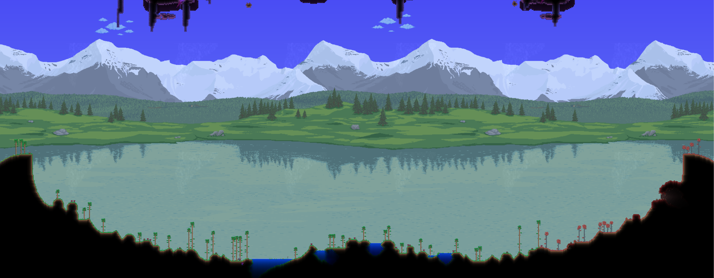

Collection of things I have created in the Terraria Modding API called

Mainly stuff from my content mod called 'Transcendent Mod' 
Hover over videos to enlarge them.
Click on the above the videos to open the video in a new window.
A custom rarity I made for Heaven-related and Post-Seraph items.
Link
A landmark, which marks the location of Lower Heaven.
The biome will be overridden by other biomes terrain,
you can see an example in the image below.
Contains some chests, life crystals and holy springs.
These holy springs will regenerate your life faster and can be fished on to obtain fishing loot from Lower Heaven and gear.

Current Theme (Day)
Current Theme (Night)
A summon weapon dropped by the Celestial Seraph, the current final boss of my mod.
Summons a miniature galaxy to obliterate enemies
The galaxy becomes bigger and faster the more you summon
Right Click to turn the galaxy into a shield that can block up to 7 projectiles
The shield has a 15 second cooldown after breaking
Link
Boundary used by the Celestial Seraph in some of His attacks.
The fog changes colour depending on the attack and the stars can be hooked on.
Link
A biome introduced by my mod that covers the region between Caverns and Hell.
Contains hellstone, carbon, ruby and new dangerous enemies.
The rocks will set you on fire, so be careful where you step, or use an obsidian skull.
Link
A mechanic added by my mod, that allows you to block attacks when timed perfectly.
You require a shield to parry, and you can obtain shields everywhere in the game from Pre-Boss to Post-Seraph.
(Omg that Sniper Rifle drop, how lucky!)
Link
A Town-NPC that moves in after obtaining a modifier item.
She allows you to apply modifiers onto items and craft new items with upgrade items.
The prices are really high, but your items get a 75% discount for any future changes.
You can obtain her phone number later in the game, allowing you to use her services remotely. (With a higher price, of course.)
Link
A Post-Moonlord Tundra boss, drops some useful gear for fighting Atmospheron and the Post-Atmospheron Dungeon.
The oldest and most polished boss in my mod.
He has existed from the first few weeks of 1.4.4
I've spent dozens of hours working on Him, polishing His attacks and respriting Him and His projectiles.
Celestial Seraph will play a big role from Early Hardmode to Late Post-Moonlord.
The fight is still yet to be finished.
A rework for the Destroyer bossfight, this is for a completely seperate mod than the ones above.
The fight is extremely fun
The mod's development is currently paused, because making Worm AI code for the game frustrated me way too much.
In the meanwhile, you can download the resource pack I made for this rework
Download it here